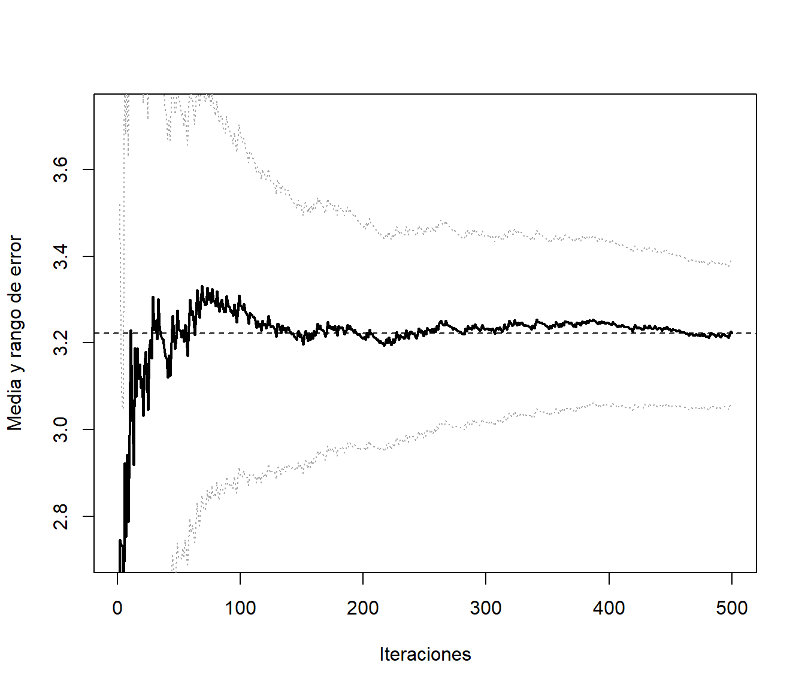

10.2 Variables antitéticas
Supongamos que pretendemos aproximar \[\theta=E\left( Z\right)\] con \(Var\left( Z \right) = \sigma^{2}\). Si generamos \(n\) pares \(\left( X_{1},Y_{1}\right), ... ,\left( X_{n},Y_{n}\right)\) de \(X\sim Y\sim Z\) con \(Cov\left( X,Y\right) < 0\), el estimador combinado tiene menor varianza: \[\begin{aligned} Var\left( \frac{\overline{X}+\overline{Y}}{2}\right) & =\frac{1}{4}\left( Var\left( \overline{X}\right) +Var\left( \overline{Y}\right) +2Cov\left( \overline{X},\overline{Y}\right) \right) \\ & =\frac{\sigma^{2}}{2n}+\frac{1}{2n}Cov\left( X,Y\right) \\ & =\frac{\sigma^{2}}{2n}\left( 1+\rho \left( X,Y\right) \right), \end{aligned}\] que el equivalente a una muestra unidimensional independiente con el mismo número de observaciones \(2n\) (con una reducción del \(-100\rho \left( X,Y\right) \%\)).
10.2.1 Ejemplo: Integración Monte Carlo
Para aproximar: \[I=\int_{0}^{1}h\left( x\right) dx,\] a partir de \(x_{1},x_{2},\ldots,x_{n}\) \(i.i.d.\) \(\mathcal{U}\left(0,1\right)\). Podemos emplear: \[\begin{aligned} I & =E\left( \frac{h\left( U\right) +h\left( 1-U\right) }{2}\right) \\ & \approx \frac{1}{2n}\sum \limits_{i=1}^{n}\left( h\left( x_{i}\right) +h\left( 1-x_{i}\right) \right). \end{aligned}\]
10.2.2 Generación de variables antitéticas
Cuando se utiliza el método de inversión resulta sencillo obtener pares de variables con correlación negativa:
\(U\sim \mathcal{U}\left( 0,1\right)\) para simular \(X\).
\(1-U\) para simular la variable antitética \(Y\).
En el caso general, si \(X=h\left( U_{1},\ldots,U_{d}\right)\) y \(h\) es monótona puede verse (e.g. Ross, 1997) que \(Y=h\left( 1-U_{1},\ldots,1-U_{d}\right)\) está negativamente correlada con \(X\).
Si \(X\sim \mathcal{N}(\mu,\sigma)\) puede tomarse como variable antitética \[Y=2\mu-X\] En general esto es válido para cualquier variable simétrica repecto a un parámetro \(\mu\). (e.g. \(X\sim \mathcal{U}(a,b)\) e \(Y=a+b-X\)).
Crear una función que implemente la técnica de variables antitéticas para aproximar integrales del tipo:\[I=\int_{a}^{b}h\left( x\right) dx.\] Emplearla para aproximar: \[E\left( e^{\mathcal{U}(0,2)}\right) =\int_{0}^{2}\frac{1}{2}e^{x}dx\approx3.194,\label{integralmc}\] y representar gráficamente la aproximación en función de \(n\). Función objetivo:
a <- 0; b <- 2
ftn <- function(x) return(exp(x)/(b-a))
curve(ftn, a, b, ylim=c(0,4))
abline(h=0,lty=2)
abline(v=c(a,b),lty=2)
Se trata de calcular la media de \(e^{\mathcal{U}(0,2)}\):
## [1] 3.194528Para la aproximación por integración Monte Carlo podemos emplear la función del capítulo anterior:
mc.integral <- function(ftn, a, b, n, plot=TRUE) {
fx <- sapply(runif(n, a, b), ftn)*(b-a)
if (plot) {
estint <- cumsum(fx)/(1:n)
esterr <- sqrt(cumsum((fx-estint)^2))/(1:n)
plot(estint, ylab="Media y rango de error", type="l", lwd= 2,
ylim=mean(fx)+2*c(-esterr[1],esterr[1]), xlab="Iteraciones")
abline(h = estint[n], lty=2)
lines(estint+2*esterr, lty = 3)
lines(estint-2*esterr, lty = 3)
return(list(valor=estint[n], error=2*esterr[n]))
} else return(list(valor=mean(fx), error=2*sd(fx)/sqrt(n)))
}
set.seed(54321)
res <- mc.integral(ftn, a, b, 500)
abline(h = teor)
## $valor
## [1] 3.184612
##
## $error
## [1] 0.1619886Para la integración Monte Carlo con variables antitéticas podríamos considerar:
mc.integrala <- function(ftn, a, b, n, plot=TRUE,...) {
# n es el nº de evaluaciones de la función objetivo (para facilitar comparaciones, solo se genera la mitad)
x <- runif(n%/%2, a, b)
# La siguiente línea solo para representar alternando
x <- as.numeric(matrix(c(x,a+b-x),nrow=2,byrow=TRUE))
# bastaría con emplear p.e. c(x,a+b-x)
fx <- sapply(x, ftn)*(b-a)
if (plot) {
estint <- cumsum(fx)/(1:n)
esterr <- sqrt(cumsum((fx-estint)^2))/(1:n)
plot(estint, ylab="Media y rango de error",type="l", lwd = 2,
ylim=mean(fx)+2*c(-esterr[1],esterr[1]),xlab="Iteraciones",...)
abline(h = estint[n], lty=2)
lines(estint+2*esterr, lty = 3)
lines(estint-2*esterr, lty = 3)
return(list(valor=estint[n],error=2*esterr[n]))
} else return(list(valor=mean(fx),error=2*sd(fx)/sqrt(n)))
}
set.seed(54321)
res <- mc.integrala(ftn, a, b, 500)
## $valor
## [1] 3.222366
##
## $error
## [1] 0.1641059Pero aunque aparentemente converge antes, parece no haber una mejora en la precisión de la aproximación. Si calculamos el porcentaje (estimado) de reducción del error:
## [1] -1.307067El problema es que en este caso se está estimando mal la varianza (asumiendo independencia). Hay que tener cuidado con las técnicas de reducción de la varianza si uno de los objetivos de la simulación es precisamente estimar la variabilidad. En este caso, una versión de la función anterior para integración Monte Carlo con variables antitéticas, con aproximación del error bajo dependencia podría ser:
mc.integrala2 <- function(ftn, a, b, n, plot = TRUE,...) {
# n es el nº de evaluaciones de la función objetivo (para facilitar comparaciones, solo se genera la mitad)
x <- runif(n%/%2, a, b)
# La siguiente línea solo para representar alternando
x <- matrix(c(x,a+b-x),nrow=2,byrow=TRUE)
# bastaría con emplear p.e. c(x,a+b-x)
fx <- apply(x, 1, ftn)*(b-a)
corr <- cor(fx[,1], fx[,2])
fx <- as.numeric(fx)
return(list(valor=mean(fx), error=2*sd(fx)/sqrt(n)*sqrt(1+corr)))
}
set.seed(54321)
res <- mc.integrala2(ftn, a, b, 500)
res## $valor
## [1] 3.222366
##
## $error
## [1] 0.05700069Porcentaje estimado de reducción del error:
## [1] 64.81191En este caso puede verse que la reducción teórica de la varianza es del 96.7%